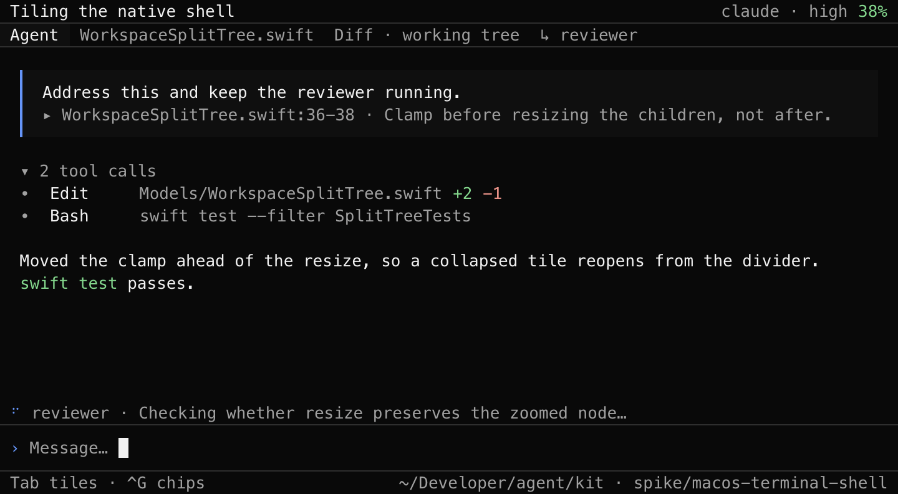
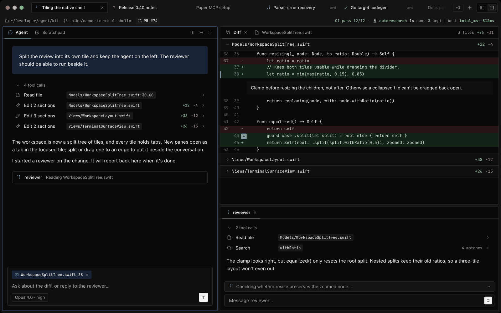
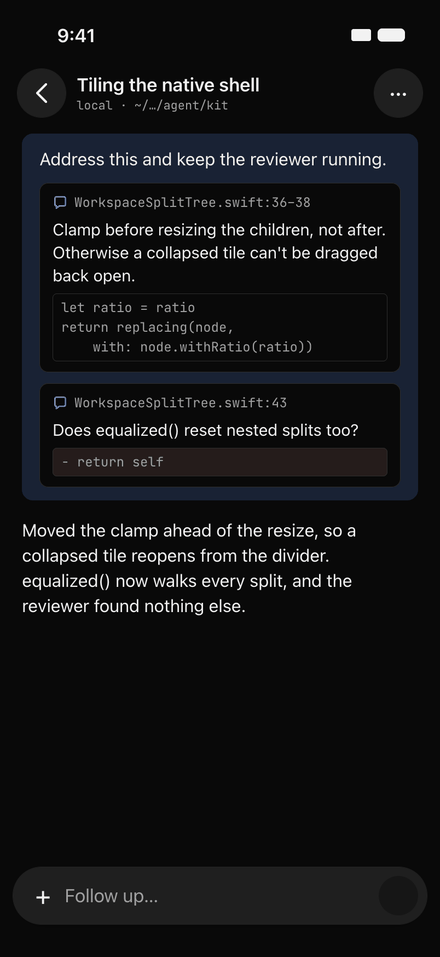
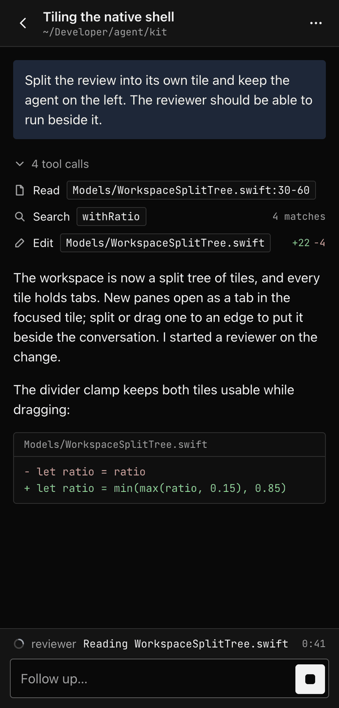

A workspace for youand agentsto work in.
The agent, your files, diffs, and review notes side by side. Read what it changed, annotate the lines that matter, and send that back. Terminal, Mac, iPhone, browser, editor.
Review the workwhere it happened.
An agent's changes are only as good as your review of them. Kit keeps that review next to the conversation instead of in another app.
- The agent works in its tabTool activity stays compact and inline. Long answers split into sections you can jump between.
- You read the changesThe working tree, a recent commit, or your branch against its base as one continuous diff, unified or split.
- You annotate, it respondsSelect a line or range in a file or diff and leave a note. Notes collect above the composer and go with your next message as a structured review.
One workspace,many tabs.
Everything opens as a tab beside the agent.
- FilesAny file in the project with syntax highlighting. Mention files in a message with
@, and open any file the agent touched from its tool activity. - DiffsThe working tree updates live as the agent edits, with pinned file headers and hunk-by-hunk navigation.
- ScratchpadAutosaved notes shared with the agent, its subagents, and every fork of the session. Plans and findings live here instead of getting buried in the transcript.
- Subagent conversationsAny subagent's transcript as a live tab, beside the main one.
- Terminals and a browserIn the Mac app, shells and web pages open as tiles beside the transcript.
Work keeps goingwhen you step away.
Sessions live in a Kit server, not in the window you opened them from. Close the terminal and the agent keeps running; come back from any client and pick up where it is.
Servers
Session tabs can come from any of these. The kit command uses the same list.
- localThis Mac · ~/.kitRunning···
- devboxSSH · me@devboxConnected···
- staginghttps://staging.example.devPairing expiredPair Again
- old-miniSSH · akonwi@old-mini.localCan’t connect···
- vpshttps://kit.example.devConnected···
Pair a Device with vps
Scan the code with the other device, or send it the link.
Paste the link in Add Server, or run kit attach with it.
Works once · expires in 4:52
Terminal, Mac, iPhone, browser, editor.One session, exactly the same.
Type on one, the others follow.




- TerminalOne native executable with the CLI, the server, and a keyboard-driven UI with mouse support.
- Mac appWindow tabs, split panes, drag-to-annotate diffs, and a scratchpad editor. It restores your windows on launch and shares your theme and model settings with the terminal.
- iPhone, browser, editorSessions waiting on you come first on the phone. The browser client is served by your server. In Zed, Kit is the agent in the panel over ACP.
Diagrams and figures,drawn by Kit itself.
Mermaid through Kit's own renderer: box-drawing in the terminal, native on the Mac. Stats, timelines, checklists, and comparisons as figures.
┌──────┐ ┌─────┐ │ You │ │ Kit │ └──┬───┘ └──┬──┘ │ + note on L42 │ │──────────────────────────▶│ │ │ edit · test │◀──────────────────────────│ │ ✓ +8 −2, tests pass │ │──────────────────────────▶│
tests ████████████████████ 52 / 52 context ████████░░░░░░░░░░░░ 41%
Agents thatwork together.
Delegate without blocking. Kit supervises parallel work and brings the results back to you.
- from code-reviewer2 findings: the retry test skips the interrupted path; publish before save.
- from librarianADR 0031 and the session-api doc cover receipts.
Soundness and security.
Searched docs and session history.
Sketching the review flow in Paper.
- SubagentsRun concurrently with their own context. Their state survives restarts; when one finishes, its result comes back through a mailbox and an idle parent wakes up to act on it.
- Sessions that talk to each otherA session can ask another session a question and get just the answer back, not its whole transcript. It can also open a new session in another directory.
Make it fityour projects.
Configure Kit per user in ~/.kit or per project in the repo. Kit can help configure itself.
- Prompt commandsMarkdown prompts that become commands, with
$1and$ARGUMENTSplaceholders. - MCP serversLocal and remote, including OAuth. Existing
.mcp.jsonfiles work, and tool definitions load on demand. - Plugins in any languageChild processes that speak JSON-RPC to add tools and commands, approve or block tool calls, ask questions, and add status to the footer.
- ThemesKit matches your terminal's colors by default. Custom themes are JSON files shared by every client.
- Bring your own key and subscriptionsSign in with a subscription or an API key. Switch model and thinking level per session.
- Agent definitionsNamed subagents as Markdown files in
.kit/agents, with their own model and instructions.
Get Kit.
brew install akonwi/tap/kit
brew install --cask akonwi/tap/kit-app
Or download the Mac app. The app connects to a running Kit server, so install the CLI too. Phones and browsers pair with kit server pair; editors run kit acp.
- kit
- Resume or start a session in this directory
- kit sessions
- Browse, rename, and open sessions
- kit new --name "Spike"
- Start a fresh named session
- kit --temp
- Work in a throwaway session
- kit attach me@devbox
- Run the server on another host over SSH
- git diff | kit print "review"
- One headless turn; only the answer goes to stdout
Built by Akonwi.